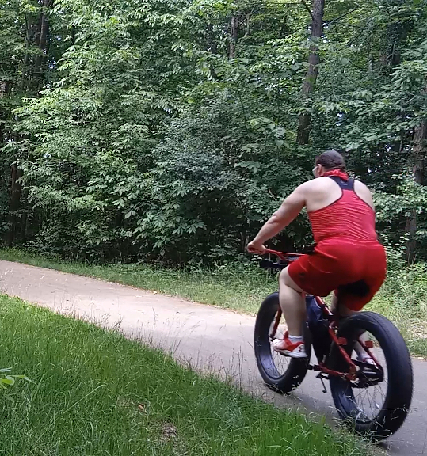

Bees At The Knees
Written June 9th 2020, 9:50:18 pm EDT

I sprayed myself with sunscreen today,
grabbed my bicycle, and went on my way.
And then,
all of a sudden!
I thought I was attacked by some angry bees,
it turned out to be a mosquito who got me twice, in both knees.
To be fair, I wore my new short pants to be trendy,
but the little sucker didn't need to get me where I am so bendy.
It itched all the way back home with each turn of the bicycle wheel,
... it was indeed a very itchy ordeal.
When I finally got home, I took a vitamin,
and on each knee; I squirted a bit of anti-histamine.
I sat there a bit, wondering "Why me?"
"Why get me twice in each knee?"
To be honest, until I realized that's simply where my new pants ended,
I was feeling pretty gosh darn offended.
